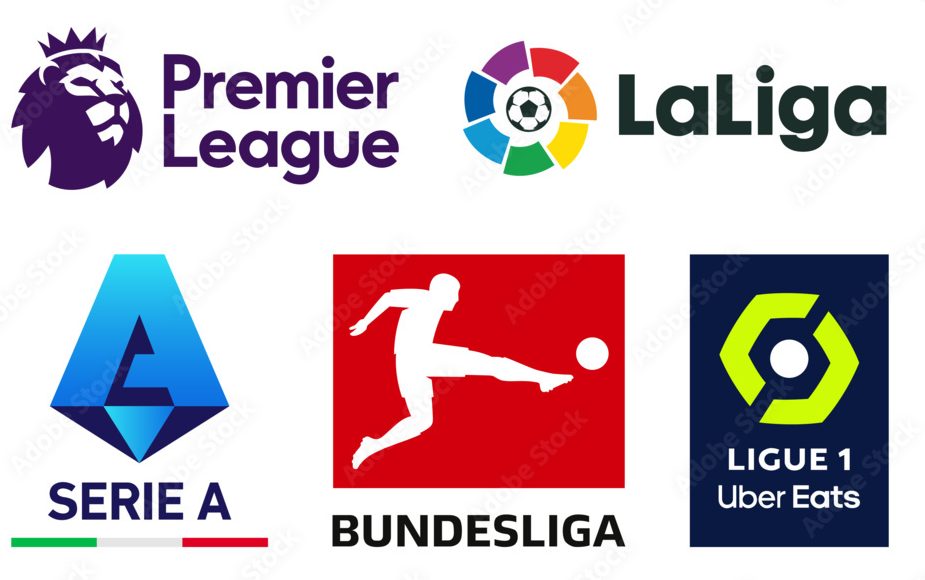
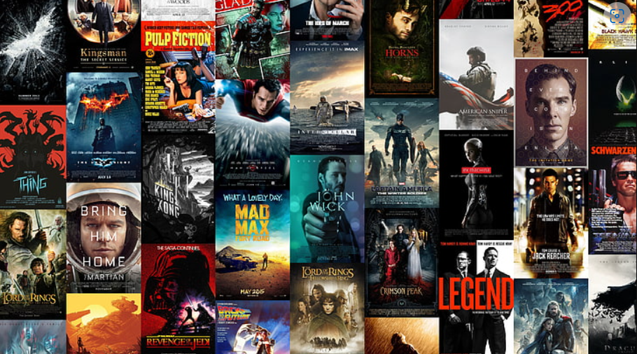

In this project, I meticulously cleaned layoff data and conducted an in-depth exploratory analysis using MySQL. Following this, I visualized the findings with Tableau to deliver insightful and visually compelling representations of the data.
In this project, I analyzed a COVID-19 dataset from Kaggle. I cleaned the data using both Excel and SQL, followed by an exploratory analysis in MySQL. Finally, I utilized Tableau to present my findings on global infections and deaths, providing clear and insightful visualizations.
In this project, I analyzed a YouTube dataset to identify the top-performing YouTubers in the UK. I prepared and cleaned the data using Excel and MySQL, followed by an exploratory data analysis in MySQL. Finally, I presented my findings using Power BI, creating clear and impactful visualizations.

Using Python and Pandas, I analysed a football dataset to find information such as average ages by league, net transfer records and the percentage of foreign players per league and club.
An analysis of a summer Olympics dataset to find information such as total medals by country and sport. I then did a further analysis focusing on the United states to compare the total medals by gender to see who performs better, men or women

In this project I looked at what variables effect the gross revenue from movies.
In this project I scraped data from Amazon to analyze price data for products.
I have many projects on Tableau, please click on the link below to view my profile